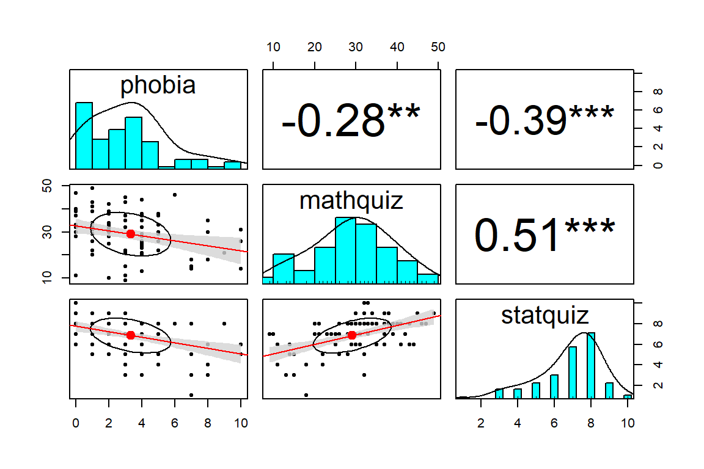
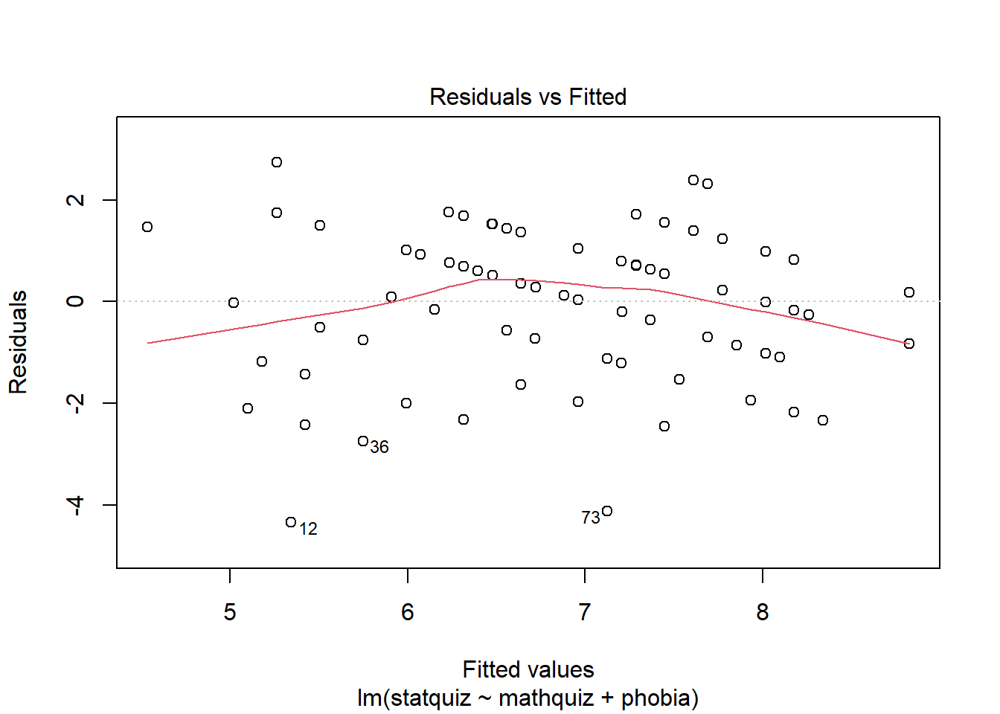
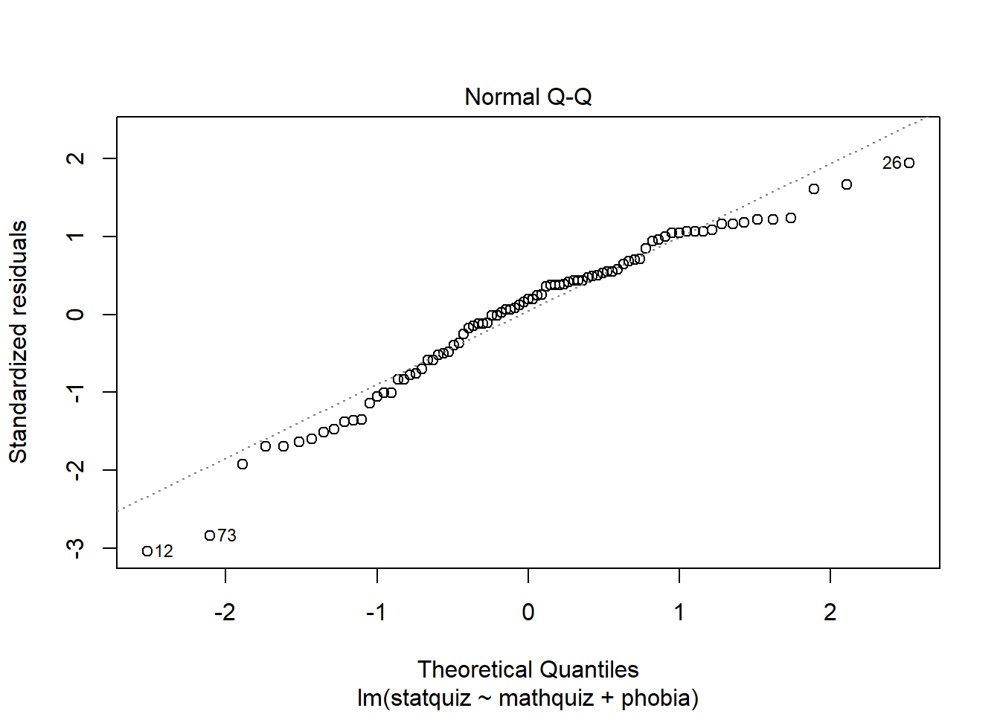
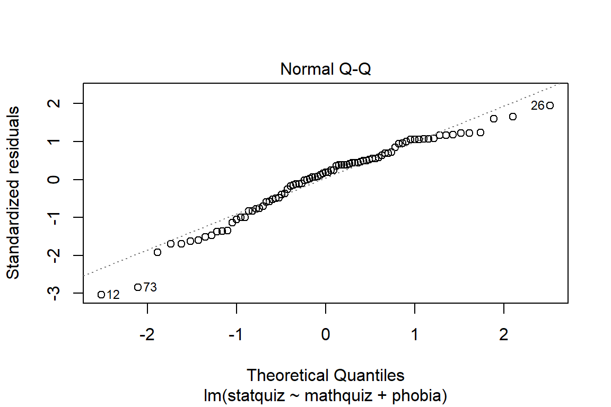
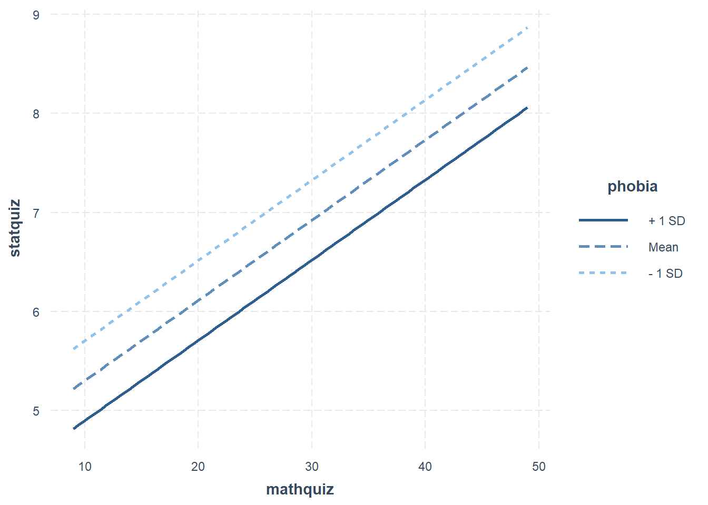
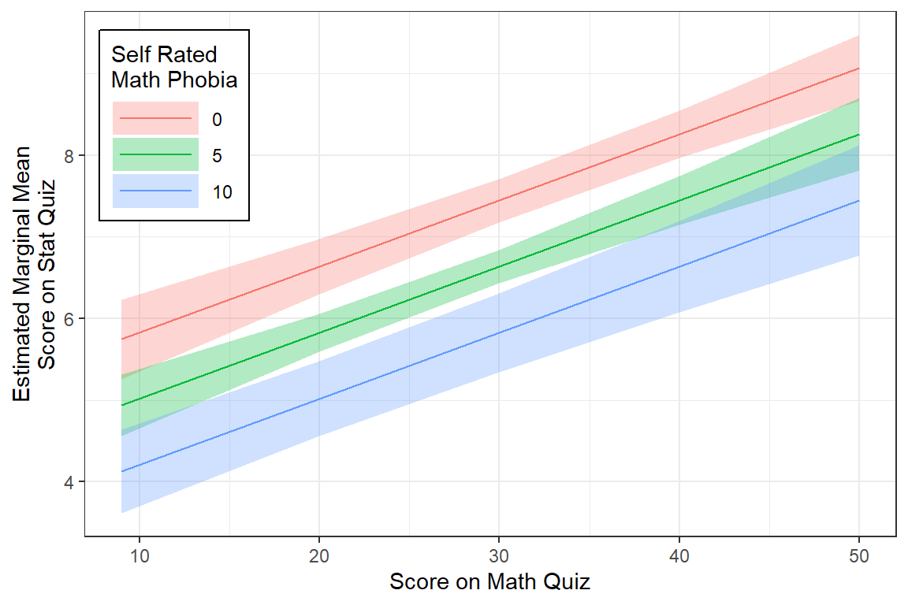
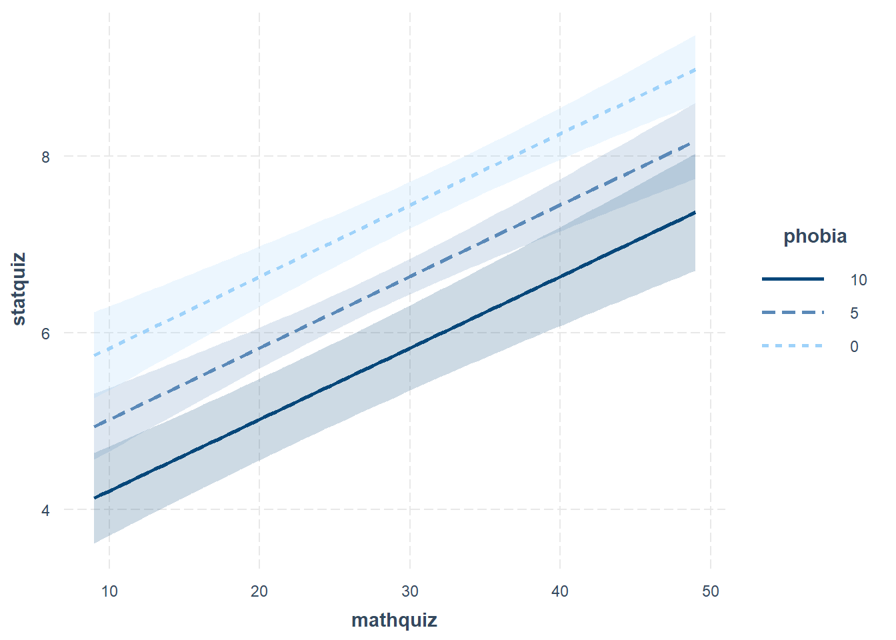

5 Multiple Linear Regression - Ex: Ihno’s Experiment (interaction between two continuous IVs)

library(tidyverse) # super helpful everything!
library(haven) # inporting SPSS data files
library(furniture) # nice tables of descriptives
library(texreg) # nice regression summary tables
library(stargazer) # nice tables of descrip and regression
library(corrplot) # visualize correlations
library(car) # companion for applied regression
library(effects) # effect displays for models
library(psych) # lots of handy tools5.1 Purpose
5.1.1 Research Question
Does math phobia moderate the relationship between math and statistics performance? That is, does the assocation between math and stat quiz performance differ at variaous levels of math phobia?
5.1.2 Data Description
Inho’s dataset is included in the textbook “Explaining Psychological Statistics” (Cohen 2013) and details regarding the sample and measures is describe in this Encyclopedia’s Vol. 2 - Ihno’s Dataset.
data_ihno <- haven::read_spss("https://raw.githubusercontent.com/CEHS-research/eBook_regression/master/data/Ihno_dataset.sav") %>%
dplyr::rename_all(tolower) %>%
dplyr::mutate(gender = factor(gender,
levels = c(1, 2),
labels = c("Female",
"Male"))) %>%
dplyr::mutate(major = factor(major,
levels = c(1, 2, 3, 4,5),
labels = c("Psychology",
"Premed",
"Biology",
"Sociology",
"Economics"))) %>%
dplyr::mutate(reason = factor(reason,
levels = c(1, 2, 3),
labels = c("Program requirement",
"Personal interest",
"Advisor recommendation"))) %>%
dplyr::mutate(exp_cond = factor(exp_cond,
levels = c(1, 2, 3, 4),
labels = c("Easy",
"Moderate",
"Difficult",
"Impossible"))) %>%
dplyr::mutate(coffee = factor(coffee,
levels = c(0, 1),
labels = c("Not a regular coffee drinker",
"Regularly drinks coffee"))) %>%
dplyr::mutate(mathquiz = as.numeric(mathquiz))Rows: 100
Columns: 18
$ sub_num <dbl> 1, 2, 3, 4, 5, 6, 7, 8, 9, 10, 11, 12, 13, 14, 15, 16, 17,...
$ gender <fct> Female, Female, Female, Female, Female, Female, Female, Fe...
$ major <fct> Psychology, Psychology, Psychology, Psychology, Psychology...
$ reason <fct> Advisor recommendation, Personal interest, Program require...
$ exp_cond <fct> Easy, Easy, Easy, Easy, Easy, Moderate, Moderate, Moderate...
$ coffee <fct> Regularly drinks coffee, Not a regular coffee drinker, Not...
$ num_cups <dbl> 0, 0, 0, 0, 1, 1, 0, 2, 0, 2, 1, 0, 1, 2, 3, 0, 0, 3, 2, 1...
$ phobia <dbl> 1, 1, 4, 4, 10, 4, 4, 4, 4, 5, 5, 4, 7, 4, 3, 8, 4, 5, 0, ...
$ prevmath <dbl> 3, 4, 1, 0, 1, 1, 2, 1, 1, 0, 1, 0, 0, 1, 1, 0, 1, 1, 3, 1...
$ mathquiz <dbl> 43, 49, 26, 29, 31, 20, 13, 23, 38, NA, 29, 32, 18, NA, 21...
$ statquiz <dbl> 6, 9, 8, 7, 6, 7, 3, 7, 8, 7, 8, 8, 1, 5, 8, 3, 8, 7, 10, ...
$ exp_sqz <dbl> 7, 11, 8, 8, 6, 6, 4, 7, 7, 6, 10, 7, 3, 4, 6, 1, 7, 4, 9,...
$ hr_base <dbl> 71, 73, 69, 72, 71, 70, 71, 77, 73, 78, 74, 73, 73, 72, 72...
$ hr_pre <dbl> 68, 75, 76, 73, 83, 71, 70, 87, 72, 76, 72, 74, 76, 83, 74...
$ hr_post <dbl> 65, 68, 72, 78, 74, 76, 66, 84, 67, 74, 73, 74, 78, 77, 68...
$ anx_base <dbl> 17, 17, 19, 19, 26, 12, 12, 17, 20, 20, 21, 32, 19, 18, 21...
$ anx_pre <dbl> 22, 19, 14, 13, 30, 15, 16, 19, 14, 24, 25, 35, 23, 27, 27...
$ anx_post <dbl> 20, 16, 15, 16, 25, 19, 17, 22, 17, 19, 22, 33, 20, 28, 22...5.2 Exploratory Data Analysis
Before embarking on any inferencial anlaysis or modeling, always get familiar with your variables one at a time (univariate), as well as pairwise (bivariate).
5.2.1 Univariate Statistics
Summary Statistics for all three variables of interest (Hlavac 2018).
data_ihno %>%
dplyr::select(phobia, mathquiz, statquiz) %>%
data.frame() %>%
stargazer::stargazer(type = "text")
============================================================
Statistic N Mean St. Dev. Min Pctl(25) Pctl(75) Max
------------------------------------------------------------
phobia 100 3.310 2.444 0 1 4 10
mathquiz 85 29.071 9.480 9.000 22.000 35.000 49.000
statquiz 100 6.860 1.700 1 6 8 10
------------------------------------------------------------5.2.2 Bivariate Relationships
The furniture package’s table1() function is a clean way to create a descriptive table that compares distinct subgroups of your sample (Barrett, Brignone, and Laxman 2020).
Although categorizing continuous variables results in a loss of information (possible signal or noise), it is often done to investigate relationships in an exploratory way.
data_ihno %>%
dplyr::mutate(phobia_cut3 = cut(phobia,
breaks = c(0, 2, 4, 10),
include.lowest = TRUE)) %>%
furniture::table1(mathquiz, statquiz,
splitby = ~ phobia_cut3,
na.rm = FALSE,
test = TRUE,
output = "html")| [0,2] | (2,4] | (4,10] | P-Value | |
|---|---|---|---|---|
| n = 39 | n = 37 | n = 24 | ||
| mathquiz | 0.014 | |||
| 32.6 (8.5) | 26.5 (9.8) | 26.8 (8.9) | ||
| statquiz | 0.001 | |||
| 7.6 (1.3) | 6.6 (1.6) | 6.1 (2.0) |
One of the quickest ways to get a feel for all the pairwise relationships in your dataset (provided there aren’t too many variables) is with the pairs.panels() function in the psych package (Revelle 2020).
data_ihno %>%
dplyr::select(phobia, mathquiz, statquiz) %>%
data.frame() %>%
psych::pairs.panels(lm = TRUE,
ci = TRUE,
stars = TRUE)
When two variables are both continuous, correlations (Pearson’s \(R\)) are an important measure of association.
Notice the discrepincy between the correlation between statquiz and phobia. Above, the psych::pairs.panels() function uses pairwise complete cases by default, so \(r=-.39\) is computed on all \(n=100\) subjects. Below, we specified use = "complete.obs" in the cor() fucntion, so all correlations will be based on the same \(n=85\) students, making it listwise complete. The choice of which method to you will vary by situation.
Often it is easier to digest a correlation matrix if it is visually presented, instead of just given as a table of many numbers. The corrplot package has a useful function called corrplot.mixed() for doing just that (Wei and Simko 2017).
data_ihno %>%
dplyr::select(phobia, mathquiz, statquiz) %>%
cor(use = "complete.obs") %>%
corrplot::corrplot.mixed(lower = "ellipse",
upper = "number",
tl.col = "black")
5.3 Regression Analysis
5.3.1 Subset the Sample
All regression models can only be fit to complete observations regarding the variables included in the model (dependent and independent). Removing any case that is incomplete with respect to even one variables is called “list-wise deletion”.
In this analysis, models including the mathquiz variable will be fit on only 85 students (sincle 15 students did not take the math quiz), where as models not including this variable will be fit to all 100 studnets.
This complicates model comparisons, which require nested models be fit to the same data (exactly). For this reason, the dataset has been reduced to the subset of students that are complete regarding the three variables utilized throughout the set of five nested models.
data_ihno_fitting <- data_ihno %>%
dplyr::filter(complete.cases(mathquiz, statquiz, phobia))
tibble::glimpse(data_ihno_fitting)Rows: 85
Columns: 18
$ sub_num <dbl> 1, 2, 3, 4, 5, 6, 7, 8, 9, 11, 12, 13, 15, 17, 18, 19, 21,...
$ gender <fct> Female, Female, Female, Female, Female, Female, Female, Fe...
$ major <fct> Psychology, Psychology, Psychology, Psychology, Psychology...
$ reason <fct> Advisor recommendation, Personal interest, Program require...
$ exp_cond <fct> Easy, Easy, Easy, Easy, Easy, Moderate, Moderate, Moderate...
$ coffee <fct> Regularly drinks coffee, Not a regular coffee drinker, Not...
$ num_cups <dbl> 0, 0, 0, 0, 1, 1, 0, 2, 0, 1, 0, 1, 3, 0, 3, 2, 2, 0, 2, 2...
$ phobia <dbl> 1, 1, 4, 4, 10, 4, 4, 4, 4, 5, 4, 7, 3, 4, 5, 0, 4, 3, 4, ...
$ prevmath <dbl> 3, 4, 1, 0, 1, 1, 2, 1, 1, 1, 0, 0, 1, 1, 1, 3, 0, 1, 1, 3...
$ mathquiz <dbl> 43, 49, 26, 29, 31, 20, 13, 23, 38, 29, 32, 18, 21, 37, 37...
$ statquiz <dbl> 6, 9, 8, 7, 6, 7, 3, 7, 8, 8, 8, 1, 8, 8, 7, 10, 7, 4, 8, ...
$ exp_sqz <dbl> 7, 11, 8, 8, 6, 6, 4, 7, 7, 10, 7, 3, 6, 7, 4, 9, 6, 3, 7,...
$ hr_base <dbl> 71, 73, 69, 72, 71, 70, 71, 77, 73, 74, 73, 73, 72, 68, 77...
$ hr_pre <dbl> 68, 75, 76, 73, 83, 71, 70, 87, 72, 72, 74, 76, 74, 67, 78...
$ hr_post <dbl> 65, 68, 72, 78, 74, 76, 66, 84, 67, 73, 74, 78, 68, 74, 73...
$ anx_base <dbl> 17, 17, 19, 19, 26, 12, 12, 17, 20, 21, 32, 19, 21, 15, 39...
$ anx_pre <dbl> 22, 19, 14, 13, 30, 15, 16, 19, 14, 25, 35, 23, 27, 19, 39...
$ anx_post <dbl> 20, 16, 15, 16, 25, 19, 17, 22, 17, 22, 33, 20, 22, 18, 40...5.3.2 Fit Nested Models
The bottom-up approach consists of starting with an initial NULL model with only an intercept term and them building additional models that are nested.
Two models are considered nested if one is conains a subset of the terms (predictors or IV) compared to the other.
fit_ihno_lm_0 <- lm(statquiz ~ 1, # null model: intercept only
data = data_ihno_fitting)
fit_ihno_lm_1 <- lm(statquiz ~ mathquiz, # only main effect of mathquiz
data = data_ihno_fitting)
fit_ihno_lm_2 <- lm(statquiz ~ phobia, # only mian effect of phobia
data = data_ihno_fitting)
fit_ihno_lm_3 <- lm(statquiz ~ mathquiz + phobia, # both main effects
data = data_ihno_fitting)
fit_ihno_lm_4 <- lm(statquiz ~ mathquiz*phobia, # additional interaction
data = data_ihno_fitting)5.3.3 Comparing Nested Models
5.3.3.1 Model Comparison Table
In single level, multiple linear regression significance of predictors (independent variables, IV) is usually based on both the Wald tests of significance for each beta estimate (shown with stars here) and comparisons in the model fit via the \(R^2\) values.
Again the texreg package comes in handy to display several models in the same tal e (Leifeld 2020).
texreg::knitreg(list(fit_ihno_lm_0,
fit_ihno_lm_1,
fit_ihno_lm_2,
fit_ihno_lm_3,
fit_ihno_lm_4),
custom.model.names = c("No Predictors",
"Only Math Quiz",
"Only Phobia",
"Both IVs",
"Add Interaction"))| No Predictors | Only Math Quiz | Only Phobia | Both IVs | Add Interaction | |
|---|---|---|---|---|---|
| (Intercept) | 6.85*** | 4.14*** | 7.65*** | 5.02*** | 5.60*** |
| (0.19) | (0.53) | (0.29) | (0.63) | (0.91) | |
| mathquiz | 0.09*** | 0.08*** | 0.06* | ||
| (0.02) | (0.02) | (0.03) | |||
| phobia | -0.25*** | -0.16* | -0.34 | ||
| (0.07) | (0.07) | (0.21) | |||
| mathquiz:phobia | 0.01 | ||||
| (0.01) | |||||
| R2 | 0.00 | 0.26 | 0.13 | 0.31 | 0.31 |
| Adj. R2 | 0.00 | 0.25 | 0.12 | 0.29 | 0.29 |
| Num. obs. | 85 | 85 | 85 | 85 | 85 |
| p < 0.001; p < 0.01; p < 0.05 | |||||
5.3.3.2 Likelihood Ratio Test of Nested Models
An alternative method for determing model fit and variable importance is the likelihood ratio test. This involves comparing the \(-2LL\) or inverse of twice the log of the likelihood value for the model. The difference in these values follows a Chi Squared distribution with degrees of freedom equal to the difference in the number of parameters estimated (number of betas).
- Test the main effect of math quiz:
# A tibble: 2 x 6
Res.Df RSS Df `Sum of Sq` F `Pr(>F)`
<dbl> <dbl> <dbl> <dbl> <dbl> <dbl>
1 84 253. NA NA NA NA
2 83 188. 1 65.3 28.8 0.000000700- Test the main effect of math phobia
# A tibble: 2 x 6
Res.Df RSS Df `Sum of Sq` F `Pr(>F)`
<dbl> <dbl> <dbl> <dbl> <dbl> <dbl>
1 84 253. NA NA NA NA
2 83 221. 1 32.3 12.1 0.000791- Test the main effect of math phobia, after controlling for math test
# A tibble: 2 x 6
Res.Df RSS Df `Sum of Sq` F `Pr(>F)`
<dbl> <dbl> <dbl> <dbl> <dbl> <dbl>
1 83 188. NA NA NA NA
2 82 175. 1 12.6 5.88 0.0175- Test the interaction between math test and math phobia (i.e. moderation)
# A tibble: 2 x 6
Res.Df RSS Df `Sum of Sq` F `Pr(>F)`
<dbl> <dbl> <dbl> <dbl> <dbl> <dbl>
1 82 175. NA NA NA NA
2 81 173. 1 1.69 0.789 0.3775.3.4 Checking Assumptions via Residual Diagnostics
Before reporting a model, ALWAYS make sure to check the residules to ensure that the model assumptions are not violated.


The car package has a handy function called residualPlots() for displaying residual plots quickly (Fox, Weisberg, and Price 2020).

Test stat Pr(>|Test stat|)
mathquiz -1.7778 0.07918 .
phobia 0.5004 0.61813
Tukey test -1.5749 0.11527
---
Signif. codes: 0 '***' 0.001 '**' 0.01 '*' 0.05 '.' 0.1 ' ' 1While the model tables give starts to denote significance, you may print the actual p-values with the summary() function applied to the model name.
Call:
lm(formula = statquiz ~ mathquiz + phobia, data = data_ihno_fitting)
Residuals:
Min 1Q Median 3Q Max
-4.3436 -0.8527 0.2805 0.9857 2.7370
Coefficients:
Estimate Std. Error t value Pr(>|t|)
(Intercept) 5.01860 0.62791 7.993 7.23e-12 ***
mathquiz 0.08097 0.01754 4.617 1.42e-05 ***
phobia -0.16176 0.06670 -2.425 0.0175 *
---
Signif. codes: 0 '***' 0.001 '**' 0.01 '*' 0.05 '.' 0.1 ' ' 1
Residual standard error: 1.462 on 82 degrees of freedom
Multiple R-squared: 0.3076, Adjusted R-squared: 0.2907
F-statistic: 18.21 on 2 and 82 DF, p-value: 2.849e-07
Call:
lm(formula = statquiz ~ mathquiz * phobia, data = data_ihno_fitting)
Residuals:
Min 1Q Median 3Q Max
-4.1634 -0.8433 0.2832 0.9685 2.9434
Coefficients:
Estimate Std. Error t value Pr(>|t|)
(Intercept) 5.600183 0.907824 6.169 2.57e-08 ***
mathquiz 0.061216 0.028334 2.161 0.0337 *
phobia -0.339426 0.210907 -1.609 0.1114
mathquiz:phobia 0.006485 0.007303 0.888 0.3771
---
Signif. codes: 0 '***' 0.001 '**' 0.01 '*' 0.05 '.' 0.1 ' ' 1
Residual standard error: 1.464 on 81 degrees of freedom
Multiple R-squared: 0.3143, Adjusted R-squared: 0.2889
F-statistic: 12.37 on 3 and 81 DF, p-value: 9.637e-075.4 Conclusion
5.4.1 Tabulate the Final Model Summary
Many journals prefer that regression tables include 95% confidence intervals, rater than standard errors for the beta estimates.
texreg::knitreg(fit_ihno_lm_3,
custom.model.names = "Main Effects Model",
ci.force = TRUE, # request 95% conf interv
caption = "Final Model for Stat's Quiz",
single.row = TRUE)| Main Effects Model | |
|---|---|
| (Intercept) | 5.02 [ 3.79; 6.25]* |
| mathquiz | 0.08 [ 0.05; 0.12]* |
| phobia | -0.16 [-0.29; -0.03]* |
| R2 | 0.31 |
| Adj. R2 | 0.29 |
| Num. obs. | 85 |
| * 0 outside the confidence interval. | |
5.4.2 Plot the Model
When a model only contains main effects, a plot is not important for interpretation, but can help understand the relationship between multiple predictors.

Interval = 95% Confidence Interval
interactions::interact_plot(model = fit_ihno_lm_3,
pred = mathquiz,
modx = phobia,
modx.values = c(0, 5, 10),
interval = TRUE)
Interval = plus-or-minus one standard error for the mean (SEM)
interactions::interact_plot(model = fit_ihno_lm_3,
pred = mathquiz,
modx = phobia,
modx.values = c(0, 5, 10),
interval = TRUE,
int.width = .68)
The Effect() function from the effects package chooses ‘5 or 6 nice values’ for each of your continuous independent variable (\(X's\)) based on the range of values found in the dataset on which the model and plugs all possible combinations of them into the regression equation \(Y = \beta_0 + \beta_1 X_1 + \beta_2 X_2 \dots \beta_k X_k\) to compute the predicted mean value of the outcome (\(Y\)) (Fox et al. 2020).
When plotting a regression model the outcome (dependent variable) is always on the y-axis (fit) and only one predictor (independent variable) may be used on the x-axis. You may incorporate additional predictor using colors, shapes, linetypes, or facets. For these predictors, you will want to specify only 2-4 values for illustration and then declare them as factors prior to plotting.
effects::Effect(focal.predictors = c("mathquiz", "phobia"),
mod = fit_ihno_lm_3,
xlevels = list(phobia = c(0, 5, 10))) %>% # values for illustration
data.frame() %>%
dplyr::mutate(phobia = factor(phobia)) %>% # factor for illustration
ggplot() +
aes(x = mathquiz,
y = fit,
fill = phobia) +
geom_ribbon(aes(ymin = fit - se,
ymax = fit + se),
alpha = .3) +
geom_line(aes(color = phobia)) +
theme_bw() +
labs(x = "Score on Math Quiz",
y = "Estimated Marginal Mean\nScore on Stat Quiz",
fill = "Self Rated\nMath Phobia",
color = "Self Rated\nMath Phobia") +
theme(legend.background = element_rect(color = "black"),
legend.position = c(0, 1),
legend.key.width = unit(1.5, "cm"),
legend.justification = c(-0.1, 1.1))
5.5 Write-up
There is evidence both
mathquizandphobiaare associated withstatquizand that the relationship is addative (i.e. no interaction).
There is a strong association between math and stats quiz scores, \(r = .51\). Math phobia is associated with lower math, \(r = -.28\), and stats quiz scores, \(r = -.36\). When considered togehter, the combined effects of math phobia and math score account for 31% of the variance in statistical achievement.
Not surprizingly, while higher self-reported math phobia was associated with lower statists scores, \(b = -0.162\), \(p=.018\), \(95CI = [-0.29, -0.03]\), higher math quiz scores were associated with higher stats score, \(b = -0.081\), \(p<.001\), \(95CI = [0.05, 0.12]\).
There was no evidence that math phobia moderated the relationship between math and quiz performance, \(p=.377\).